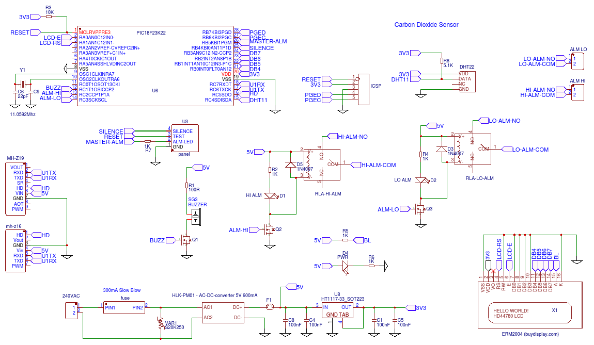

CO2 Monitoring is mandatory in many workplaces and it affects two of my clients directly in Barrel Halls where wine is stored and aged in temperature and environmentally controlled areas. The table below shows the affects of various concentrations in the air.
| 250-350ppm | Normal background concentration in outdoor ambient air |
| 350-1,000ppm | Concentrations typical of occupied indoor spaces with good air exchange |
| 1,000-2,000ppm | Complaints of drowsiness and poor air. |
| 2,000-5,000 ppm | Headaches, sleepiness and stagnant, stale, stuffy air. Poor concentration, loss of attention, increased heart rate and slight nausea may also be present. |
| 5,000 | Workplace exposure limit (as 8-hour TWA) in most jurisdictions. |
| >40,000 ppm | Exposure may lead to serious oxygen deprivation resulting in permanent brain damage, coma, even death. |
The project described below uses a MH-Z16 or MH-Z19 CO2 sensor and a DHT-22 (or DHT-11 if less accuracy is required) to measure the Temperature and Humidity. It has a 4 line by 20 character LCD Display to show the current readings and status, a warning alarm and two relays which can be triggered on a low CO2 (Generally above 1000 ppm) normally to switch on an extractor fan and a high level (4000 ppm) which will trigger a warning device such as an external alarm. There are two models I used the 0 to 5000 ppm device here but the code will be the same for the 0 to 10000 ppm model.
Warning: The system is mains powered (100VAC – 240VAC) so if you are replicating the project you should be very careful when wiring up and enclosing the board to ensure it meets all safety guidelines, and if it is going into a public space or factory environment it will need to be installed and tested by a qualified electrician. The PCB is designed for a standard industrial 158 x 90 x 65 mm Plastic Enclosure.
Circuit Description
The MH-z19 is a self contained sensor powered from 5V which has its own internal processor and outputs the CO2 level as either a pulse width modulated signal or in a serial UART data format. The datasheet is not very detailed but has enough information to use it. I still have a lot of PIC18F24K22 chips lying about from Wine Technology Marlborough’s MLP project and as this has 2 UARTS I decided to use the serial port. The PIC is a little overkill but two UARTS does mean we have a spare serial port that can be used in case the builder wants to output the air quality data to another system.
A HD44780 compatible 4 line x 20 character display (2004) was chosen so I could fit all the information on without being too cramped. The interface to the PIC is via 4 data lines not 8 as I was initially going to use the extra ports for another purpose. The only difference between the 4-bit and 8-bit interface is a single initialization bit and the need to then send two writes to the device not one. (less soldering is also always good if you are building it without a PCB) The LCD is mounted on the transparent front of the enclosure and connected by flying leads to the PCB
I need 5V and 3.3V supplies for this (the MH-Z19 interface levels are 3.3V even though it is powered from 5V) No engineer in his or her right mind is going to design their own switch mode power supply for the mains unless they were making thousands and cost was an issue so I have used an off the shelf HLK-PM01 5V AC to DC converter which cost around US$8 each in single quantities. I picked this unit as I saw a review/strip down and test (here) and while it looks a bit sloppy inside, it was safe in all aspects, passes NZ electrical safety (PAT) testing and runs quite efficiently and cool for extended periods. The unit above has been on and off for several months now without any issues.
The DHT-22 is a one-wire device, you need to drag the data pin low for 20mS to initiate the data transfer, the protocol is quite simple and requires only a few lines of code and a timer to measure the pulse lengths and convert them to 0’s and 1’s. See the logic trace below I captured during development, the first trace is a debug line I was asserting to check the timing, the bottom trace is the actual DHT-11 trace.
(Note DHT-11 and DHT-22 are the same but the DHT-11 is limited to 0-50Dec at 1 degree accuracy and 20-80% RH where as the DHT-22 is a few dollars more and has a full temperature range of -40 to +100 Dec at 0.5 DegC and 0-100% RH)
The two buttons and the LED connected to U3 header are to reset the unit, which also re-calibrates the MH-Z19, the second button is to silence the buzzer should it go off (it is a 1 hour silence so it will re-sound if the levels are still high an hour later) the LED flashes during an alarm and connects to the LED on the silence button
Two off-the-shelf 5V relays were used to allow switching of a mains extractor fan and an alarm as required.
The second UART is wired to the ICSP port and it will supply 3.3V, 0V TXD and RXD to an external board if required (A 4-wire RS422/modbus chip such as a MAX3488/90 or even a bluetooth or ESP serial wifi module would be ideal if required)
The circuit is below 
Note that only 1 CO2 sensor can be used at a time so it is either a MH-Z19 or a MH-Z16 do not insert both units or it wont work!
As usual I have put the design up at EasyEDA here and you can fork it off and press the manufacture button on the PCB design page to make them yourself or press buy to get the PCBs made (US$17 for Qty 5) The design is fully tested and working.
The C code for the PIC is actually 100% working now (must update the EasyEDA description sometime) and it is zipped up as a MPLAB-X Project file here. To use you must install the MPLAB-X Eclipse IDE, the XC8 compiler and unzip and open the project and build for your target MPU no other headers or libraries are required and its just a few hundred lines of code. You will need a PICKIT2 or PICKIT3 connected to the ICSP connector to program the device but I guess if your reading this you will already know this, if you do not have a PIC the code is quite well commented if you want to convert it to another micro.
Licence is totally Open Source/Public Domain so do with it as you wish 🙂
As an interesting side note; Even though I live by the coast in rural New Zealand one of the least polluted and populated environment in the world I could not achieve the 350 ppm normal limit below, the best I got was 370 ppm so I guess either the sensor is a bit off or global warming must be real. (worrying when you live only 2M above sea level like me!)